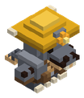

Bestiario › Facción


Variantes de color
Kobold minero
Hostil Bípedo Facción Kobolds Guerrero
Kobold de casco amarillo con lámpara; abre las galerías y a los intrusos a golpe de pico.
2Nivel
38Vida
8,1Daño
2Armadura
0,4Regeneración
3,9Velocidad
Dónde aparece
| Hordas | Kobolds |
|---|
Efectos de sus ataques
- Perforación de armadura · 25 % (al golpear)
Armamento
| Arma | Miner pick |
|---|
Botín
| Objeto | Cantidad | Probabilidad |
|---|---|---|
 Carbón Carbón | 1 – 3 | 60 % |
 Mena de cobre Mena de cobre | 1 – 2 | 40 % |
 Mena de hierro Mena de hierro | 1 | 20 % |
Archivo de datos: mods/factions/kobolds_warrior.json · tamaño del vóxel 0,08 m · cuerpo de 0,7 × 1,32 bloques